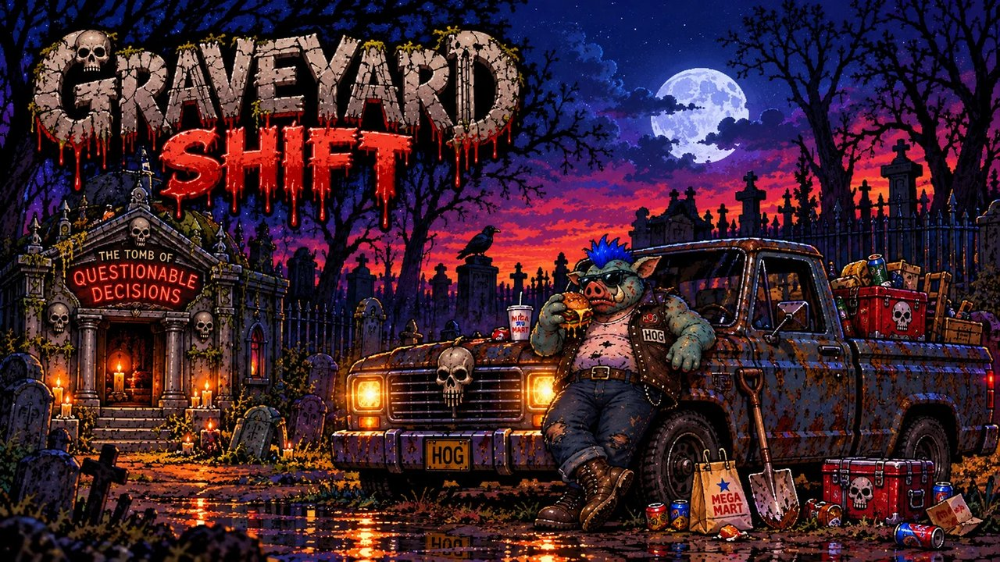

Grave Hog's Graveyard Shift
Grave Hog's Graveyard Shift is a fast, chaotic horror roguelite starring Grave Hog, the cemetery’s most overworked night-shift employee.
Fight through swarms of undead creatures, collect bizarre weapons and upgrades, hunt down bosses, and survive until sunrise. But clocking out doesn’t mean the night is over—Grave Hog still has to make one quick stop at Mega-Mart, where the aisles are packed with entirely new monsters, bosses, and bad decisions.
With chunky retro pixel art, automatic combat, randomized weapon builds, hidden cameos, dark humor, and plenty of replayability, every shift plays a little differently.
The dead don’t clock out. Neither does Grave Hog.